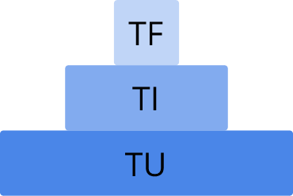
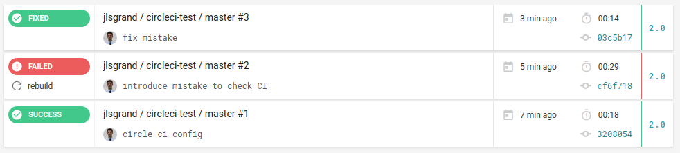

Tester son code
C'est quoi un test ?
D'après le dictionnaire Larousse
Essai d'un produit, d'un appareil pour vérifier son action, son fonctionnement.
Toute circonstance qui permet d'éprouver, de mesurer quelque chose.
Est-ce que vous testez votre code ?
La réponse est oui ! Vous faites des tests "à la main"
Mais pourquoi testez-vous votre code ?
Réponse espérée :
Pour vérifier que mon code fonctionne comme attendu
Est-ce que les tests "à la main" sont efficaces ?
Réponse espérée :
Bof Bof
Les différents types de test
Les tests unitaires
On teste une unité de code <=> souvent une fonction
Manuellement <=> System.out.println(); ou debugger
Les tests d'intégration
On teste la collaboration de plusieurs unités de code
Exemple : un repository Spring connecté à une base de données
Manuellement <=> test du controller via SOAP UI ou Postman
Les tests fonctionnels
On vérifie que la fonctionnalité développée se comporte comme attendu
Manuellement <=> test d'une fonctionnalité dans le navigateur
Les tests de performance
On teste les performances de notre code
Exemple : utilisation de Gatling
Les tests de sécurité
On teste la sécurité de notre code
Exemple : on tente des failles connues de sécurité (injection SQL, ...)
Et il y en a d'autres
Tests d'acceptance, d'utilisabilité, ...
Les tests à automatiser et maitriser
- Unitaires
- D'intégration
Les tests unitaires
- Rapides à exécuter
- Facile à mettre en place
Ils représentent souvent environ 75% des tests de l'application
Les tests d'intégration
Ils représentent souvent environ 20% des tests de l'application
Les tests fonctionnels
Ils représentent souvent environ 5% des tests de l'application
Leur automatisation peut s'avérer complexe et chronophage
La pyramide de répartition des tests
La couverture de code
Définition
Mesure determinant la proportion de code couverte pas les tests
Comprendre la couverture de codeQuelle couverture de code ?
Entre 70% et 80%
Comment couvrir 80% du code "à la main" ?
Réponse espérée :
C'est pas possible !
Comment automatiser les tests ?
Plusieurs niveaux d'automatisation
- Le test en lui même
- Son exécution
Automatiser le test
Utilisation de frameworks
- JUnit
- AssertJ
- Mockito
- ...
Exemple de fonction à tester
public class SmileFaces {
public static int countSmileys(List <String> arr) {
// Counter
int smilingFaces = 0;
// List analysis
for (String face : arr) {
// If smiley is smiling then counter++
if (matchesSmiley(face))
smilingFaces++;
}
return smilingFaces;
}
private static boolean matchesSmiley(String input) {
return input.matches("[:;][-~]?[\\)D]");
}
}
Exemple de tests JUnit
class SmileFacesTest {
@Test
void shoulReturn0IfINoSmiley() {
List<String> a = new ArrayList<String>();
assertEquals(0, SmileFaces.countSmileys(a));
}
@Test
void shouldReturn1IfISmileOnce() {
List<String> a = new ArrayList<String>();
a.add(":)");
assertEquals(1, SmileFaces.countSmileys(a));
}
}
Automatiser la réalisation
Utilisation d'un serveur d'intégration continue
- Jenkins
- Travis
- Circle CI
Capture d'écran build Circle CI
Le Test Driven Development <=> TDD
Qu'est-ce que c'est ?
Une méthode de développement ...
... dirigée par les tests